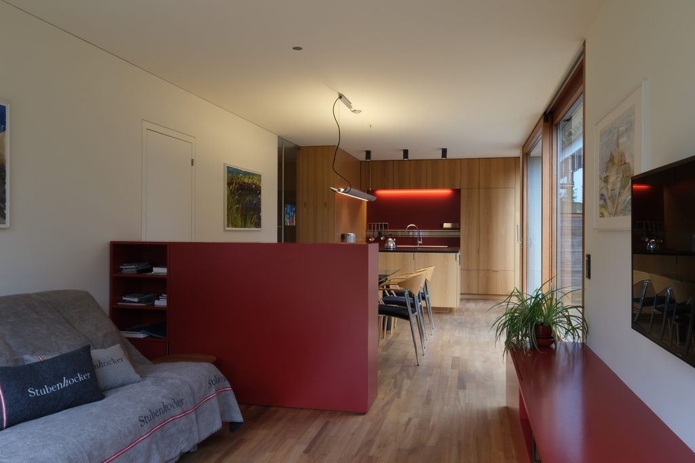
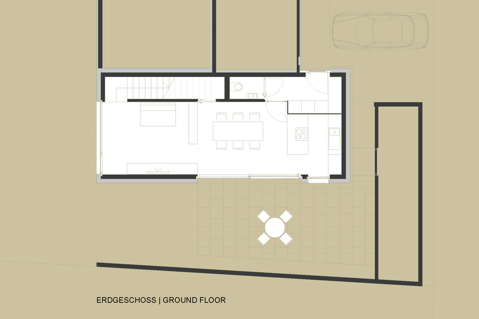
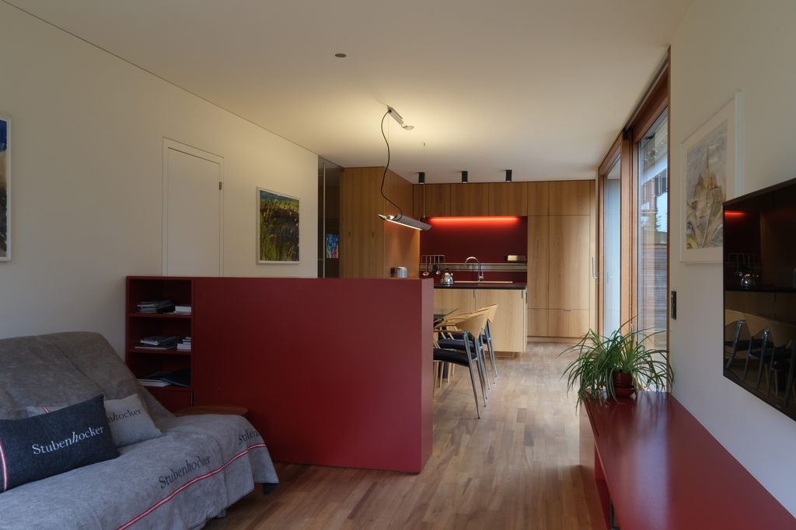
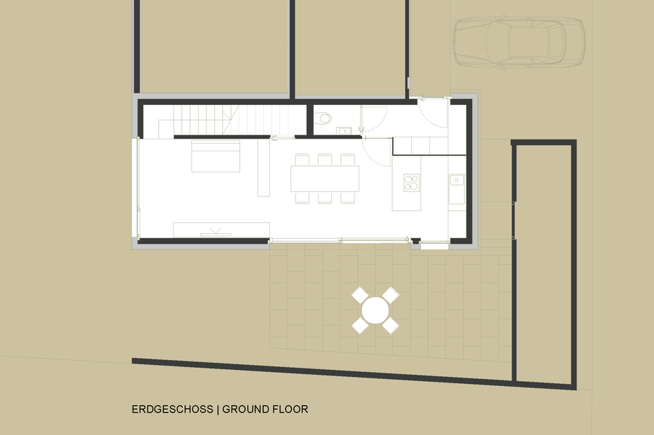
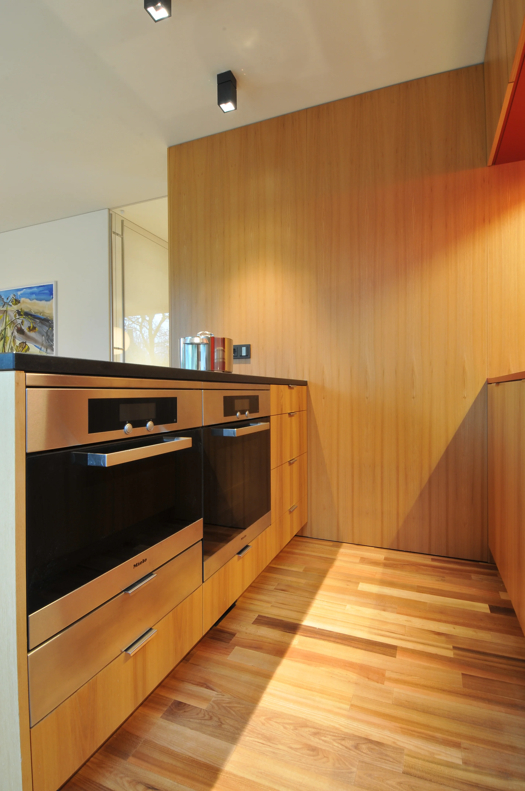

Allgemein
Mitten im Rheintal das Wunderschöne Ferienhaus Lustenau
Mitten im Rheintal wartet in Lustenau auf Sie die perfekte Ferienwohnung ganz nach Ihren
Vorstellungen.
Zahlreiche Freizeitmöglichkeiten und regionale Schmankerl laden zum Verweilen ein.
Entdecken Sie eine ideale Alternative zum herkömmlichen Hotelzimmer und freuen Sie sich auf ein
Ferienhaus
in bester Lage im Zentrum von Lustenau.
Ein Architektenhaus mit allem Drum und Dran - einfach zum Verlieben - einfach zum Wohnen - auch
über
längere
Zeit. Geschäftsreisende finden in unserem bestausgestatteten Ferienhaus eine
clevere Alternative zum Hotel.

Hier sind wir Zuhause
Preis/Info
- 110 € pro Nacht inklusive Bettwäsche, Handtücher
- Mindestaufenthalt 3 Nächte
- 70 € einmalige Reinigungspauschale
- 27 €/Person und Nacht verrechnen wir ab der 3. Person zusätzlich
- bei längerer Buchung, Preis auf Anfrage
- Haustiere auf Anfrage (Einmalige Pauschale € 30,-)
- Nichtraucher
Bilder
 



